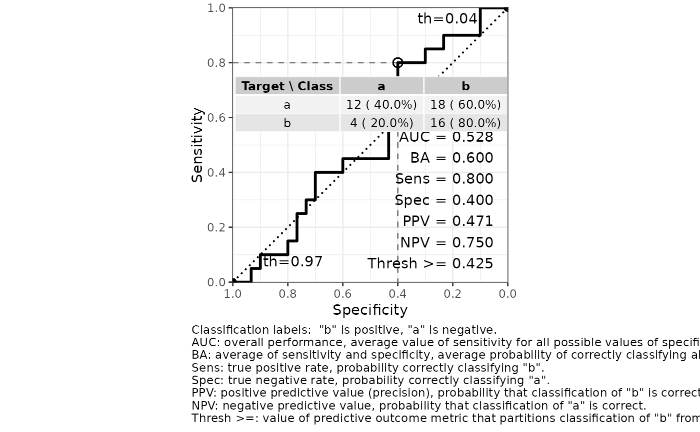
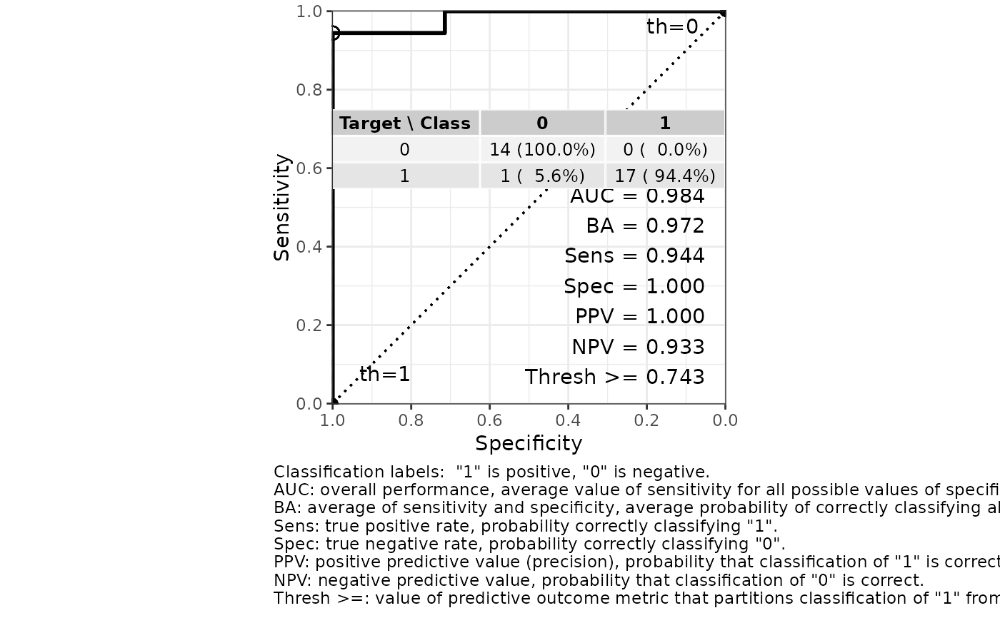

R/e_plot_roc.R
e_plot_roc.RdA function to calculate the ROC curve, determine the optimal threshold, plot the curve, and provide classification statistics
e_plot_roc(
labels_true = NULL,
pred_values_pos = NULL,
label_neg_pos = NULL,
sw_plot = TRUE,
cm_mode = c("sens_spec", "prec_recall", "everything")[1]
)true labels of binary observations, should be the same (and not a proxy) as what was used to build the prediction model
either predicted labels or a value (such as a probability) associated with the success label
labels in order c("negative", "positive")
T/F to return a ROC curve ggplot object
mode from caret::confusionMatrix
a list includingroc_curve_best - one-row tibble of classification statistics for best Sensitivity and Specificity (closest to upper-left corner of ROC curve)
pred_positive - pred_values_pos, returned as numeric 1 or 0
confusion_matrix - confusion matrix statistics
plot_roc - ROC curve ggplot object
roc_curve - ROC curve data
## Categorical prediction-value example (from ?caret::confusionMatrix)
ex_lvs <- c("normal", "abnormal")
ex_truth <- factor(rep(ex_lvs, times = c(86, 258)), levels = rev(ex_lvs))
ex_pred <- factor(c(rep(ex_lvs, times = c(54, 32))
, rep(ex_lvs, times = c(27, 231)))
, levels = ex_lvs)
out <-
e_plot_roc(
labels_true = ex_truth
, pred_values_pos = ex_pred
, label_neg_pos = ex_lvs
, sw_plot = TRUE
)
out$roc_curve_best %>% print(width = Inf)
#> # A tibble: 1 × 16
#> Sens Spec thresh dist AUC Sensitivity Specificity `Pos Pred Value`
#> <dbl> <dbl> <dbl> <dbl> <dbl> <dbl> <dbl> <dbl>
#> 1 0.895 0.628 2 0.387 0.762 0.895 0.628 0.878
#> `Neg Pred Value` Precision Recall F1 Prevalence `Detection Rate`
#> <dbl> <dbl> <dbl> <dbl> <dbl> <dbl>
#> 1 0.667 0.878 0.895 0.887 0.75 0.672
#> `Detection Prevalence` `Balanced Accuracy`
#> <dbl> <dbl>
#> 1 0.765 0.762
out$plot_roc
out$confusion_matrix
#> Confusion Matrix and Statistics
#>
#> Reference
#> Prediction normal abnormal
#> normal 54 27
#> abnormal 32 231
#>
#> Accuracy : 0.8285
#> 95% CI : (0.7844, 0.8668)
#> No Information Rate : 0.75
#> P-Value [Acc > NIR] : 0.0003097
#>
#> Kappa : 0.5336
#>
#> Mcnemar's Test P-Value : 0.6025370
#>
#> Sensitivity : 0.8953
#> Specificity : 0.6279
#> Pos Pred Value : 0.8783
#> Neg Pred Value : 0.6667
#> Prevalence : 0.7500
#> Detection Rate : 0.6715
#> Detection Prevalence : 0.7645
#> Balanced Accuracy : 0.7616
#>
#> 'Positive' Class : abnormal
#>
## Numeric prediction-value example
out <-
e_plot_roc(
labels_true = sample(c("a", "b"), size = 50, replace = TRUE)
, pred_values_pos = runif(n = 50)
, label_neg_pos = c("a", "b")
, sw_plot = TRUE
)
out$roc_curve_best %>% print(width = Inf)
#> # A tibble: 1 × 16
#> Sens Spec thresh dist AUC Sensitivity Specificity `Pos Pred Value`
#> <dbl> <dbl> <dbl> <dbl> <dbl> <dbl> <dbl> <dbl>
#> 1 0.778 0.406 0.425 0.634 0.524 0.778 0.406 0.424
#> `Neg Pred Value` Precision Recall F1 Prevalence `Detection Rate`
#> <dbl> <dbl> <dbl> <dbl> <dbl> <dbl>
#> 1 0.765 0.424 0.778 0.549 0.36 0.28
#> `Detection Prevalence` `Balanced Accuracy`
#> <dbl> <dbl>
#> 1 0.66 0.592
out$plot_roc

out$confusion_matrix
#> Confusion Matrix and Statistics
#>
#> Reference
#> Prediction a b
#> a 13 4
#> b 19 14
#>
#> Accuracy : 0.54
#> 95% CI : (0.3932, 0.6819)
#> No Information Rate : 0.64
#> P-Value [Acc > NIR] : 0.945588
#>
#> Kappa : 0.1557
#>
#> Mcnemar's Test P-Value : 0.003509
#>
#> Sensitivity : 0.7778
#> Specificity : 0.4062
#> Pos Pred Value : 0.4242
#> Neg Pred Value : 0.7647
#> Prevalence : 0.3600
#> Detection Rate : 0.2800
#> Detection Prevalence : 0.6600
#> Balanced Accuracy : 0.5920
#>
#> 'Positive' Class : b
#>
## Logistic regression
data(dat_mtcars_e)
dat_mtcars_e <-
dat_mtcars_e %>%
dplyr::mutate(
vs_V = ifelse(vs == "V-shaped", 1, 0) # 0-1 binary for logistic regression
)
# Predict engine type `vs` ("V-shaped" vs "straight") from other features.
fit_glm_vs <-
glm(
cbind(vs_V, 1 - vs_V) ~ disp + wt + carb
, family = binomial
, data = dat_mtcars_e
)
cat("Test residual deviance for lack-of-fit (if > 0.10, little-to-no lack-of-fit)\n")
#> Test residual deviance for lack-of-fit (if > 0.10, little-to-no lack-of-fit)
dev_p_val <- 1 - pchisq(fit_glm_vs$deviance, fit_glm_vs$df.residual)
dev_p_val %>% print()
#> [1] 0.9996847
car::Anova(fit_glm_vs, type = 3)
#> Analysis of Deviance Table (Type III tests)
#>
#> Response: cbind(vs_V, 1 - vs_V)
#> LR Chisq Df Pr(>Chisq)
#> disp 16.1282 1 5.92e-05 ***
#> wt 6.3792 1 0.01155 *
#> carb 12.1920 1 0.00048 ***
#> ---
#> Signif. codes: 0 ‘***’ 0.001 ‘**’ 0.01 ‘*’ 0.05 ‘.’ 0.1 ‘ ’ 1
#summary(fit_glm_vs)
glm_roc <-
e_plot_roc(
labels_true = dat_mtcars_e$vs_V
, pred_values_pos = fit_glm_vs$fitted.values
, label_neg_pos = c(0, 1)
, sw_plot = TRUE
, cm_mode = c("sens_spec", "prec_recall", "everything")[3]
)
glm_roc$roc_curve_best %>% print(width = Inf)
#> # A tibble: 1 × 16
#> Sens Spec thresh dist AUC Sensitivity Specificity `Pos Pred Value`
#> <dbl> <dbl> <dbl> <dbl> <dbl> <dbl> <dbl> <dbl>
#> 1 0.944 1 0.743 0.0556 0.984 0.944 1 1
#> `Neg Pred Value` Precision Recall F1 Prevalence `Detection Rate`
#> <dbl> <dbl> <dbl> <dbl> <dbl> <dbl>
#> 1 0.933 1 0.944 0.971 0.562 0.531
#> `Detection Prevalence` `Balanced Accuracy`
#> <dbl> <dbl>
#> 1 0.531 0.972
glm_roc$plot_roc

glm_roc$confusion_matrix
#> Confusion Matrix and Statistics
#>
#> Reference
#> Prediction 0 1
#> 0 14 1
#> 1 0 17
#>
#> Accuracy : 0.9688
#> 95% CI : (0.8378, 0.9992)
#> No Information Rate : 0.5625
#> P-Value [Acc > NIR] : 2.612e-07
#>
#> Kappa : 0.937
#>
#> Mcnemar's Test P-Value : 1
#>
#> Sensitivity : 0.9444
#> Specificity : 1.0000
#> Pos Pred Value : 1.0000
#> Neg Pred Value : 0.9333
#> Precision : 1.0000
#> Recall : 0.9444
#> F1 : 0.9714
#> Prevalence : 0.5625
#> Detection Rate : 0.5312
#> Detection Prevalence : 0.5312
#> Balanced Accuracy : 0.9722
#>
#> 'Positive' Class : 1
#>